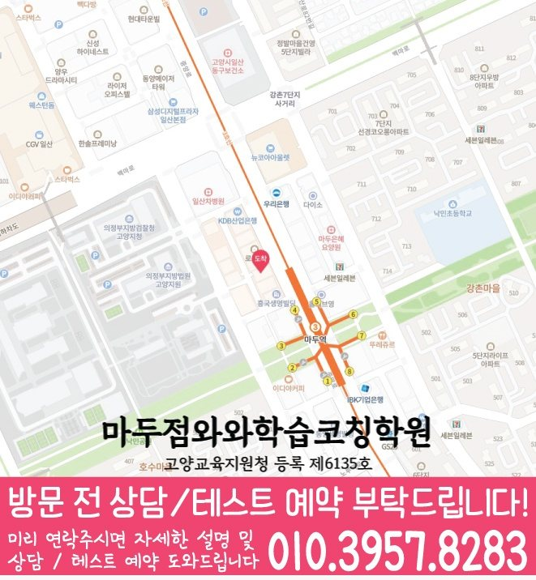

High school Korean · English · Math
백석동 고등학생 국영수학원
백석동 고등학생 국영수학원 선택 전 고등 내신 자료, 최근 오답과 과목별 가능 학년, 센터 위치·비용 확인 기준을 안내합니다.
01 Quick answer
백석동에서 먼저 확인할 내용
백석동에서 고등학생 국영수학원을 찾는다면 와와학습코칭센터 마두점의 과목별 가능 학년을 먼저 확인하세요. 제공된 고등학교 참고 자료와 학생의 실제 교재를 대조하고, 학생의 실제 풀이 기록에 맞게 국어·영어·수학의 막힌 원인을 나눈 뒤 실행 가능한 주간 계획을 정해야 합니다.
대표 학생 상황
세 과목의 과제 순서와 오답 복습 시점을 스스로 정리하기 어려운 고등학생


010-6839-8283상담 전 핵심 안내
백석동에서 고등학생을 위한 영어·수학 학원을 찾는 학생을 위해, 지역 센터는 기초부터 심화까지 단계적인 학습 로드맵을 제공합니다. 백석동 복습 계획에서는 오답 원인을 바탕으로 복습 시점을 정합니다. 경기도 고양시 백석동의 고등학생에게 필요한 국영수 수업은 선행 여부 하나로 결정되지 않습니다. 이 학습 상황을 백석동 상담에서 확인할 사례로 살펴봅니다.
지금의 공부 흐름을 읽는 기준
정확한 수준 진단. 처음부터 많은 문제를 풀기보다, 영어·수학의 개념 이해도와 풀이 습관을 먼저 점검해 학생에게 맞는 학습 순서를 설계합니다.
영어·수학 균형 학습. 영어는 어휘·문법·독해 흐름을 관리하고, 수학은 개념·유형·오답 원인을 구분해 반복 정착합니다.
백석동 고등학생의 국어·영어·수학 학습 점검에서 내신 대비는 시험 기간에만 갑자기 시작되는 과정이 아닙니다. 백석동에서 비슷한 공부 습관을 가진 학생의 내신은 하루 집중보다 누적 관리가 더 큰 영향을 주므로, 평소 과제와 시험 대비를 분리하지 않는 편이 좋습니다. 경기도 고양시 백석동 고등학생이 국어·영어·수학을 함께 관리하려면 시험 3주 전에는 범위표를 단원별 과제로 바꾸고, 시험 2주 전에는 틀린 문항을 유형별로 묶어야 합니다. 백석동 고등학생 학습 과정에서 기말 기간에는 과목별로 남은 범위를 시각화하고, 국어·영어·수학의 우선순위를 하루 단위로 조정해야 합니다.
설명을 듣고 풀이로 확인하는 과정
설명보다 이해 중심. 학생이 막히는 지점을 질문과 풀이 과정으로 확인하고, 왜 그런지 연결해 이해가 남도록 지도합니다.
백석동 복습 계획에서는 다시 풀기 결과를 바탕으로 학습 상태를 구체적으로 확인합니다. 수업-복습-오답 정리까지 학습 습관을 점검해 같은 실수가 반복되지 않게 코칭합니다.
내신 기간이 가까워질수록 커지는 불안은 “백석동 고등학생 국영수학원에서 우리 아이가 세 과목을 모두 따라갈 수 있을까”라는 점입니다. 경기도 고양시 백석동 기준으로는 주요 과목인 국어·영어·수학을 한꺼번에 늘리는 계획보다는 학교 일정과 재풀이 날짜를 먼저 대조해야 합니다. 고등학생의 최근 시험·과제 자료를 바탕으로 실제 학습 상황을 구체적으로 확인해야 합니다. 백석동 상담표에는 현재 단원과 반복 오답, 과제 소요 시간을 함께 적어 과목별 수업 방향을 구체화합니다. 백석동 학습 계획의 출발점은 오늘 실천하고 다음 점검에서 확인할 기준을 고르는 일입니다.
학교 자료로 살펴보는 백석동 고등학생 학습 우선순위
상담 전에 정리해 보면, 백신고·정발고는 제공 자료에 포함된 백석동 고등학교 참고 목록입니다. 확인 순서를 세울 때, 목록 포함 여부와 실제 수업 가능 여부는 같지 않으므로 상담에서 별도로 확인합니다.
실제 학습 범위를 확인하면, 백석동 학생이 사용하는 시험 범위표·학교 프린트·수행평가 일정 자료를 가져오면 국어·영어·수학의 현재 단원과 준비 일정을 구체적으로 확인할 수 있습니다. 상담 자료를 정리하면, 자료가 수업 진도와 재확인 날짜에 반영되는지도 물어보세요.
현재 수준에 맞춘 점검 단계
1. 현재 수준 확인. 학년, 학교 진도, 최근 시험 성적을 바탕으로 부족한 단원과 자주 틀리는 유형을 선별합니다.
2. 개념 정리와 유형 학습. 백석동 학습 점검에서는 최근 풀이 기록을 바탕으로 다음 보완 순서를 정합니다.
3. 오답 관리와 학습 피드백. 오답을 다시 풀며 끝내지 않고, 오답 원인(개념/계산/독해/조건해석 등)을 기록해 재발을 막습니다.
교과 단계별로 나눠 보는 학습 과제
고1. 백석동 수업 내용을 점검할 때는 단원별 이해도를 바탕으로 다음 보완 순서를 정합니다. 수학은 단원별 개념과 유형을 반복 점검하며 실수 패턴을 줄입니다.
고2. 학교 진도와 내신 대비를 연결해 단원별 출제 포인트를 단계별로 학습합니다. 영어 문법·독해 훈련과 수학 유형을 단계적으로 확장해 난도를 따라갑니다.
고3. 내신형과 수능형 문제풀이를 구분해 전략적으로 접근합니다. 약한 단원, 시간 관리, 오답 패턴을 집중 관리해 점수 변화를 목표로 합니다.
시험 대비. 시험 범위와 제공된 시험지의 문항 유형에 맞춰 복습 계획을 재구성하고 과목별 시간 배분을 조정합니다. 실수 유형과 자주 틀리는 문제를 우선 점검해 단기간 점수 변화를 돕습니다.
백석동 고등학생학원으로 지역 센터를 찾는다면, 학생의 현재 상태를 기준으로 영어·수학 학습 방향을 구체적으로 정리해드립니다. 상담을 통해 목표에 맞는 로드맵과 학습 방법을 안내받고 시작해 보세요.
02 Consultation examples
백석동 학부모 상담 상황 예시
아래 내용은 실제 고객 후기나 성적 결과가 아니라, 상담에서 확인할 질문을 이해하기 위한 상황 예시입니다.
백석동 고등학생 자녀의 최근 시험지와 오답 노트를 학부모가 함께 준비한 상황입니다. 상담에서는 세 과목을 모두 늘리기보다 먼저 바꿀 과목과 복습 시점을 정합니다.
백석동에서 제공된 고등학교 참고 정보인 백신고·정발고의 목록과 학생의 실제 학교 자료를 대조해 질문하는 장면을 예로 들었습니다. 실제 등록 판단 전에는 주소와 통학 시간, 센터별 운영 범위, 학교 시험 자료의 반영 방식을 차례로 확인합니다.
03 FAQ
백석동 고등학생 국영수학원 자주 묻는 질문
학부모님이 상담 전에 자주 확인하는 내용을 질문과 답변으로 정리했습니다.
백석동 고등학생 국영수학원이 필요한지 어떤 기록으로 판단하나요?
한 과목의 과제 때문에 다른 과목 복습이 자주 밀린다면 세 과목의 완료 시간과 재풀이 결과를 나누어 볼 필요가 있습니다. 센터의 실제 개설 범위는 등록 전에 확인해야 합니다.
백석동 국영수 학습에서 과목별 병목을 어떻게 나누나요?
백석동 상담에서는 국영수를 함께 관리한다는 표현이 세 과목을 동일하게 다룬다는 뜻은 아닙니다. 학생이 막힌 장면과 시험 일정을 과목별로 확인한 뒤 공통 시간표 안에서 충돌하지 않게 배치합니다.
백석동 학교별 교과 자료는 어떤 방식으로 확인하나요?
제공 목록에서 백신고·정발고 등을 확인할 수 있지만 모든 학교의 수업 가능 여부를 뜻하지는 않습니다. 실제 범위와 과제 자료를 준비해 상담에서 확인하는 편이 정확합니다.
백석동 방문 상담 전 통학 조건과 비용은 어떻게 비교하나요?
먼저 실제 방문 위치를 위 센터 확인 정보에서 확인할 수 있습니다. 센터별 교습비 확인 버튼에서 제공 자료를 볼 수 있습니다. 이후 백석동 통학 시간과 고등학생 과목 운영 범위를 센터 상담에서 대조하세요.
04 Continue
백석동 페이지 이동
카테고리 전체 지역 또는 앞뒤 지역 안내로 이동할 수 있습니다.